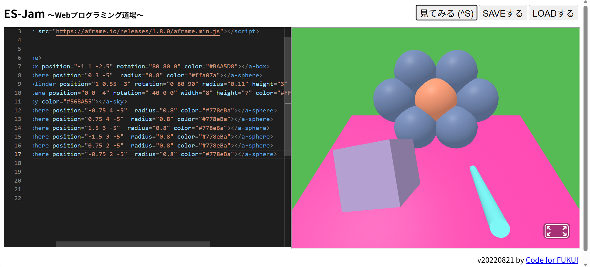

3-1 JavaScript体験：VR空間を作る

自作した３次元空間
1.内容
学習した内容を説明する文章を
様々な種類の単語を使うことで、3D空間に3Dの図形を入れることができ、位置や向きなどに対応した単語を
入れることで、調整することができる。最初は＜単語＞で初めて最後は＜/単語＞で終わる。
2.感想
学習した内容を実践したときに自分が感じた感想を
試しで、＜/単語＞を消して実行してみたら、それを消した図形はなぜか奥に行った。今まで、パイソンしか
触れたことがなかったがJabaScriptでも、色を変えるときは12進数を使うことは、初めて知った。